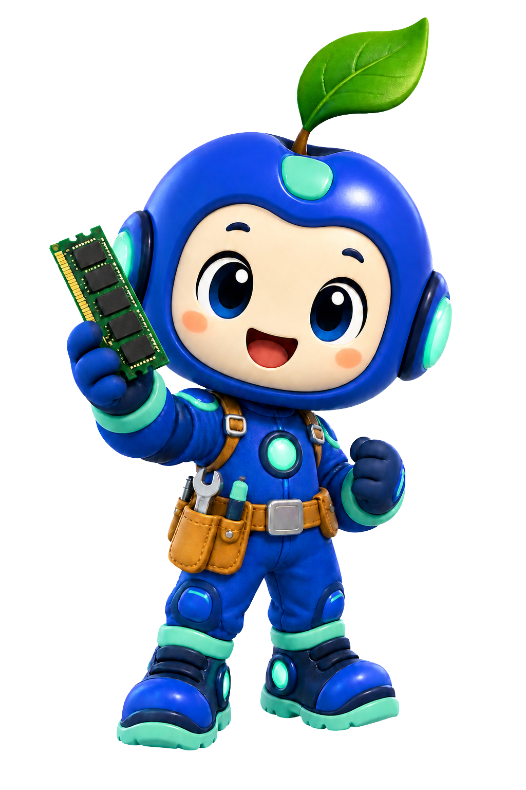

ローカルチャットGemma 2 2B
このMacで実行中このMacで快適に動く設定にして。
●
メモリとモデルを確認しました。速度と安定性のバランスがよい設定を準備します。
Unified Memory最適化の準備完了
モデル
KVキャッシュ
余裕

ローカルAIが動くまで。
モデルを読み込み、互換性とメモリを確かめて、最適なランタイムへつなぎます。
Apple Siliconの力を引き出す
メモリを、
賢く使い切る。
モデル、KVキャッシュ、実行中の作業領域をひとつのUnified Memoryとして捉え、限界を越える前に安全なプランを選びます。
- ハード上限を守るload前判定
- 長いcontextも段階的に評価
- メモリ状態をリアルタイム表示
Unified Memory Map32 GB Macのイメージ
モデルKVキャッシュ作業領域システム

自動で最適化
あなたのMacに、
ちょうどいい設定を。
同じモデルでも、Macと使い方が違えば最適解は変わります。実際のshapeとメモリを観察し、無理のない設定を選びます。
最適化前メモリ余裕応答性
→
最適化後メモリ余裕応答性
安全で信頼できる配布
ローカルだから、
守れる。
プロンプトもモデルもあなたのMacに。署名・公証・改ざん検証の経路まで含め、ローカルAIを安心して扱える設計です。
- 通信なしで完結できる推論
- macOS Notarization対応
- 配布物のSHA-256と証跡検証
vLLM Apple.app✓ Notarized